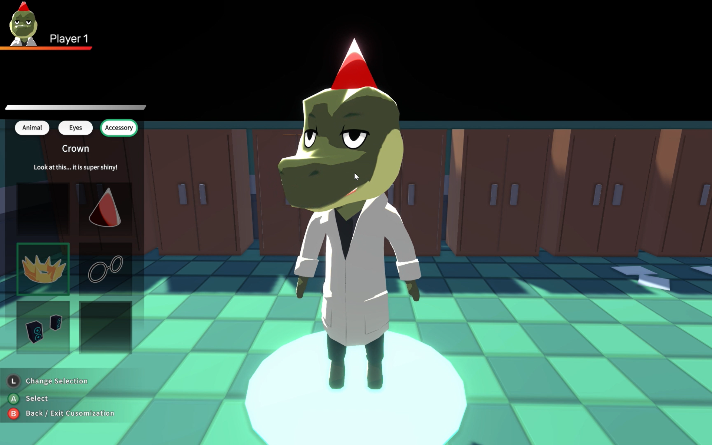

Party Animals: Hospital Rush
During the final term of my second year at Univeristy we were tasked to complete a group project in which we would create a game or website that combined detailed design and planning with deep technical elements. My group decided to create a game using the Unity Engine and our initial discussions lead us to designate team roles. I took on the Project Manager role and was put in charge of a lot of the design elements of the project along with managing the tasks at hand. I found that this project allowed me to greatly improve my management skills, getting to know more members of my cohort and assisting them in completing their tasks while also managing my own. I learnt to communicate with team members who didn't have English as their first language and how to keep my team on board with a project over a longer scale period.

This project also allowed me to develop both my design and technical skills as I could learn from both the lecturers and my group mates. I chose to focus more heavily on the design aspects as I felt this is where my strengths lie and was responsible for designing initial sketches for a lot of the branding and colour schemes used throughout the game, as well as creating the hospital environment in which it is played in. I then received help from my group mates for a lot of the C# coding and we all created our own minigame to be placed within the lobby setting. I was responsible for 'Get That Doughnut Out' which I took influence from Operation to create a fun minigame where users must get objects such as a doughnut out of an alien body. This required me to use Maya and Blender to create all of the objects used in my game and rig them, along with Unity to create the collision detection system.
Overall this project was a huge success, gaining me a very high 1st grade and I believe that it is my highest quality work so far. I think that developing the team working skills, along with my individual design and technical skills made this project extremely beneficial for my future learning and will help me to create more impressive projects.
